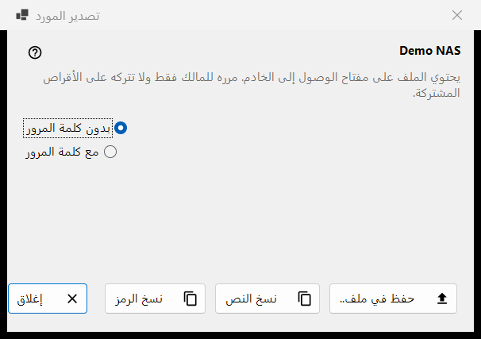
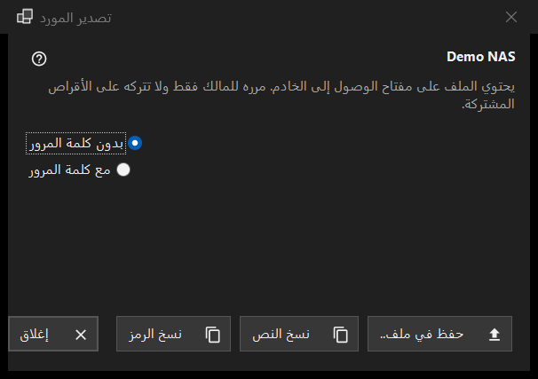

تصدير المورد
الغرض من هذه النافذة
يجهّز إعدادات خادم SFTP واحد ليستوردها كمبيوتر آخر أو هاتف. يُفتح من الأمر تصدير.. في قائمة المزيد في قائمة الموارد، ويتطلب موردًا محددًا؛ أما المجلد الذي يشاركه Share Manager فيُصدَّر من Share Manager نفسه.


بهذا الترتيب
- اقرأ التحذير تحت اسم المورد.
- اختر بدون كلمة المرور (الافتراضي) أو مع كلمة المرور.
- اضغط الزر حفظ في ملف.. أو انسخ الإعدادات كنص أو كرمز قصير.
- سلّم الناتج لصاحبه فقط.
عناصر النافذة
التحذير
يقول السطر تحت الاسم إن الملف يحمل مفتاح الوصول إلى الخادم: سلّمه لصاحبه فقط ولا تتركه أبدًا على أقراص مشتركة. وينطبق هذا على الملف والنص المنسوخ والرمز على السواء.
بدون كلمة المرور أو معها
الخيار بدون كلمة المرور محدد في البداية. أما مع كلمة المرور فلا يتفعّل إلا إذا أمكن قراءة كلمة المرور المحفوظة؛ وإلا يظهر التلميح: كلمة المرور غير محفوظة - سيكون الملف بدون واحدة. تُفكّ كلمة المرور في الذاكرة من أجل التصدير ولا تذهب إلى أي مكان آخر.
حفظ ونسخ النص ونسخ الرمز
الزر حفظ في ملف.. يكتب ملف .fmscfg عبر مربع حوار الحفظ؛ ويرفض الكاتب الأقراص بنظام FAT أو exFAT والأقراص الشبكية والمجلدات التي يستطيع مستخدمون آخرون تغييرها، ولا يترك أبدًا ملفًا مكتوبًا نصفه. الزر نسخ النص يضع مستند الإعدادات في الحافظة، والزر نسخ الرمز يضع رمزًا قصيرًا بالمحتوى نفسه. يُنسخ كلاهما مع علامات الخصوصية (دون سجل للحافظة ودون مزامنة سحابية). يعرض سطر الحالة النتيجة.
ما الذي يمكن تصديره
خادم SFTP فقط يتذكر العارض مفتاحه. تُفتح النافذة في كل الأحوال، ويظهر الرفض في سطر الحالة عند الضغط على زر: لا يمكن وصف مجلد شبكة (SMB) بهذا الملف؛ مفتاح الخادم غير محفوظ (افتح المورد مرة واحدة وأكّد المفتاح)؛ ليس للمورد عنوان يمكن تسليمه؛ المجلد مكتوب بصيغة لا يقبلها الملف (أصلحها عبر الزر تعديل..).